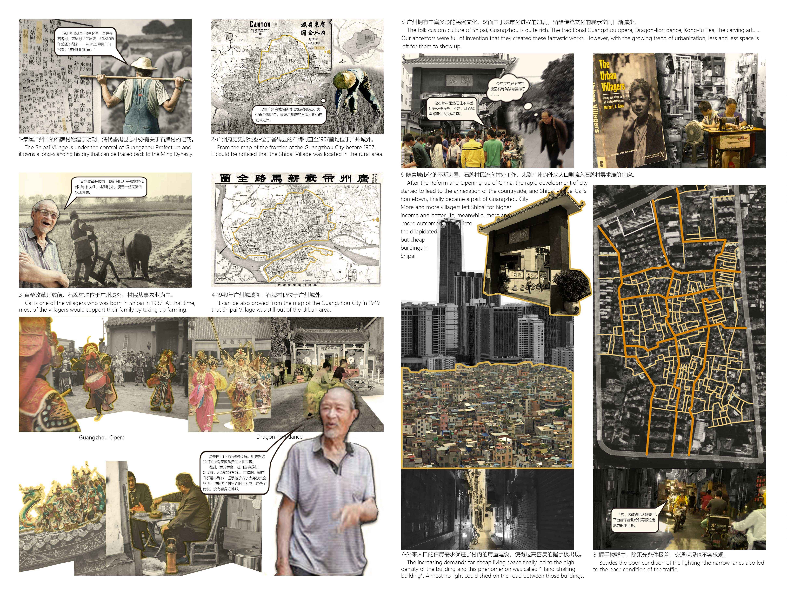

Design · 2022
The New Urban Village
Chasing pigs in the city — a speculative reimagining of the urban village typology.



Design · 2022
Chasing pigs in the city — a speculative reimagining of the urban village typology.
